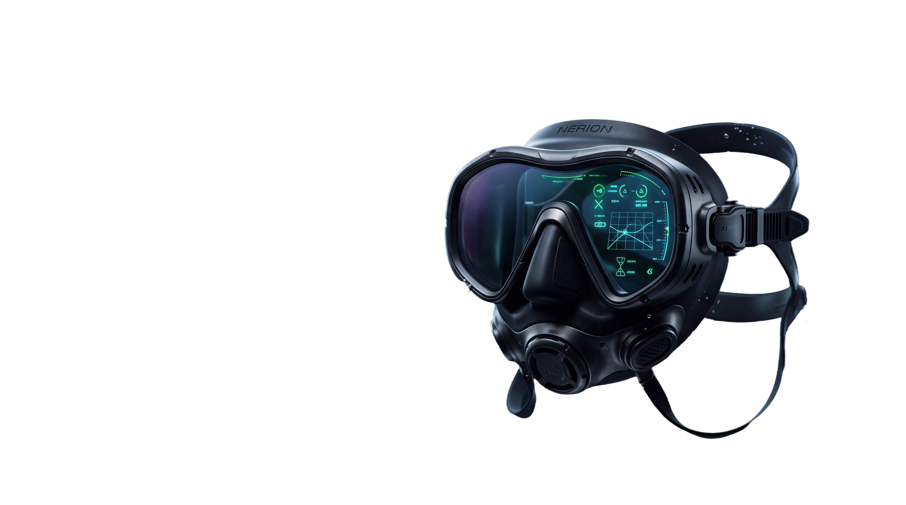
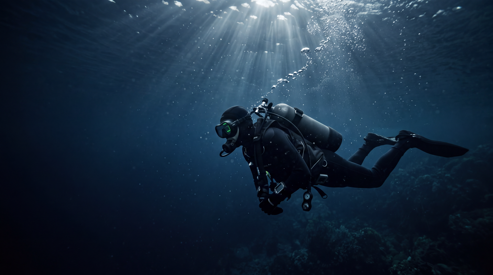

NERION / THE DESCENT BEGINS
A DIFFERENT WAY TO SEE.
FROM THE UNKNOWN. INTO COLOR.
SCROLL INTO THE ABYSS↓ NERION / EXPLORATION SYSTEMEST. 2026 · EARTH, OCEAN
Beyond the
surface.

＋N—01
INTELLIGENT DIVE MASK
INTELLIGENT DIVE MASK
02 / THE SYSTEMCOMPLEX THINKING. SIMPLE FEELING.
Quietly
extraordinary.
One connected perspective.
Every detail, considered.
PRODUCT CONCEPT
CLARITY, BY DESIGN
A wide, uninterrupted view. An adaptive lens concept designed to make the unfamiliar feel a little more familiar.

03 / THE DEEPYOU. FULLY PRESENT.
THE DESCENT PROTOCOL
Less between
you and
the blue.
Depth. Direction. A sense of place.
The information you need, quietly in view.
DEPTH24.8 M
HEADING142 ° SE
WATER18.4 °C
INTERFACE CONCEPT / SIMULATED DATA